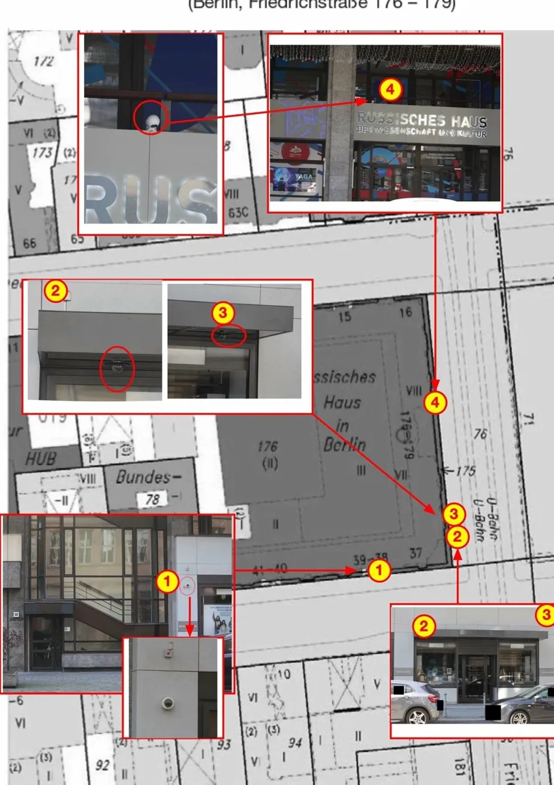

Ermittlung läuft
Der Berliner Datenschutzbeauftragte prüft, ob die Überwachungskameras des Russischen Hauses illegal öffentliche Straßen filmen. Ergebnis steht aus.

Vier dokumentierte Kamerapositionen am Russischen Haus Berlin (Friedrichstraße 176–179). Quelle: Initiative Gedenken Berlin.
📷 Was wir wissen
- Das Russische Haus betreibt mindestens vier Kameras an seinem Gebäude an der Friedrichstraße – dokumentiert mit StandortplanTAZ, April 2025 / Tages-Anzeiger, Februar 2026 / Initiative Gedenken Berlin
- Erlaubt wäre: Kameras, die nur den Eingangsbereich des Hauses selbst filmen
- Verboten wäre: Kameras, die öffentliche Straßen und Bürgersteige filmen – das ist eine Überwachung des öffentlichen Raums durch eine ausländische Regierungsbehörde
- Der Berliner Datenschutzbeauftragte prüft genau diese FrageTages-Anzeiger, Februar 2026
- Aufnahmen dieser Kameras wurden als Beweismaterial gegen Henry Lindemeier in Polizeiverfahren verwendet – möglicherweise also illegal gewonnene BeweiseTAZ, April 2025
- Der Direktor des Hauses, Pavel Izvolskiy, filmte Lindemeier zusätzlich persönlich mit dem Handy – 46 Sekunden lang, wortlos, aus nächster NäheX/@Sunnymica, 1. August 2025 → Video ansehen
- Die Aufnahmen könnten auch willkürlich unwissende Passanten erfassen, die nichts mit dem Protest zu tun haben
🌍 Was das bedeutet
- Eine russische Regierungsbehörde – die auf der EU-Sanktionsliste steht – überwacht möglicherweise den öffentlichen Raum in Berlin
- Diese Aufnahmen könnten genutzt werden, um Personen zu identifizieren, die das Haus besuchen – oder die davor protestieren
- In einem Land, das hybride Kriegsführung betreibt, Dissidenten verfolgt und Oppositionelle auch im Ausland überwacht, ist das keine theoretische Gefahr
- Russland hat in Deutschland bereits Personen observieren lassen – auch vor AnschlägenBundesanwaltschaft, 2024/2025
- Die illegal gewonnenen Kamera-Beweise wurden von der Berliner Polizei gegen einen deutschen Staatsbürger verwendet – ohne zu prüfen, ob sie legal erhoben wurden
Offene Fragen an Politik und Behörden
- Was genau filmen die Kameras des Russischen Hauses – und seit wann?
- Wer hat Zugriff auf die Aufnahmen – und werden sie nach Russland übermittelt?
- Warum hat die Berliner Polizei Beweise verwendet, ohne ihre Rechtmäßigkeit zu prüfen?
- Warum hat die Politik nicht längst eine Überprüfung aller Kameras angeordnet?
- Was wäre, wenn das Goethe-Institut in Moskau die Straße vor seinem Gebäude überwachen würde?